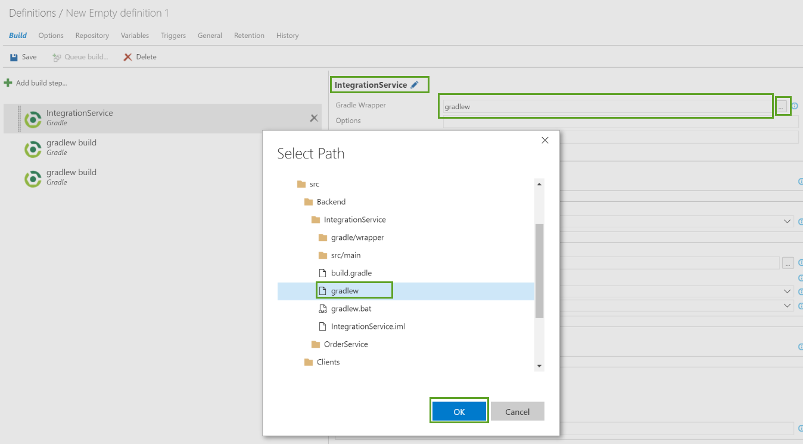

Continuous Integration
Parts Unlimited MRP App Continuous Integration with VSTS Build
In this lab, we have an application called Parts Unlimited MRP. We want to set up Visual Studio Team Services to be able continuously integrate code into the master branch of code. This means that whenever code is committed and pushed to the master branch, we want to ensure that it integrates into our code correctly to get fast feedback. To do so, we are going to be creating a build definition that will allow us to compile and run unit tests on our code every time a commit is pushed to Visual Studio Team Services.
Pre-requisites:
- Completion of the “Set up Parts Unlimited MRP” lab
- Project Administrator rights to the Visual Studio Team Services account
Tasks Overview:
Create a Continuous Integration Build: In this step, you will create a build definition in Visual Studio Team Services that will be triggered every time a commit is pushed to your repository in Visual Studio Team Services.
1. Create a Continuous Integration Build
NOTE: Ensure that you have an existing PartsUnlimitedMRP team project that also contains the Git repository cloned from GitHub. If not, complete the “Set up Parts Unlimited MRP” lab before going through this lab.
In this lab, we will be using the Hosted agent located in Visual Studio Team Services. If you would like to use an on-premises cross-platform agent (Azure subscription needed), you can follow instructions for setting an agent up with this link.
A continuous integration build will give us the ability to automate whether the code we checked in can compile and will successfully pass any automated tests that we have created against it. By using an automated build pipeline, we can quickly validate if our code changes have “broken the build” and fix code before it gets to production.
1. Go to your account’s homepage:
https://<account>.visualstudio.com **2.** Click **Browse** (if necessary), select your team project and click **Navigate**.

3. Once on the project’s home page, click on the Build hub at the top of the page.

4. Click the + New Definition button (or the green “plus” sign or the + New link), select Empty, and then click Next >.

5. Ensure the Team Project is selected as the Repository source, the appropriate repository (created in the previous step), and select “Hosted” as the Default agent queue, then click Create.

6. Click on the Build tab, click Add build step…, and then click the Add button three times next to the Gradle task to add three Gradle tasks to the script. Gradle will be used to build the Integration Service, Order Service, and Clients components of the MRP app.

6. Select the first Gradle task and click the pencil icon to edit the task name. Name the task IntegrationService and set the Gradle Wrapper to the following location (either type or browse using the … button):
src/Backend/IntegrationService/gradlew

7. Uncheck the checkbox in JUnit Test Results to Publish to TFS/Team Services since we will not be running automated tests in the Integration Service. Expand the Advanced section, and set the Working Directory to the following location:
src/Backend/IntegrationService

8. Select the second Gradle task and click the pencil icon to edit the task name. Name the task OrderService and set the Gradle Wrapper to the following location:
src/Backend/OrderService/gradlew

9. Since Order Service does have unit tests in the project, we can automate running the tests as part of the build by adding in test in the Gradle tasks field. Keep the JUnit Test Results checkbox to “Publish to TFS/Team Services” checked, and set the Test Results Files field to **/TEST-*.xml.
Expand the Advanced section, and set the Working Directory to the following location:
src/Backend/OrderService

10. Select the third Gradle task and click the pencil icon to edit the task name. Name the task Clients and set the Gradle Wrapper to the following location:
src/Clients/gradlew

11. Uncheck the checkbox in JUnit Test Results to Publish to TFS/Team Services since we will not be running automated tests in Clients. Expand the Advanced section, and set the Working Directory to the following location:
src/Clients

9. Click Add build step…, select the Utility tab, and add two Copy and Publish Build Artifacts tasks.

10. Select the first Publish Build Artifacts task, and fill in the input values with the following:
Copy Root: $(Build.SourcesDirectory)
Contents: **/build/libs/!(buildSrc)*.?ar
Artifact Name: drop
Artifact Type: Server

11. Select the second Publish Build Artifacts task, and fill in the input values with the following:
Copy Root: $(Build.SourcesDirectory)
Contents: **/deploy/SSH-MRP-Artifacts.ps1
**/deploy/deploy_mrp_app.sh
**/deploy/MongoRecords.js
Artifact Name: deploy
Artifact Type: Server

12. Go to the Triggers tab and select Continuous Integration (CI).

13. Click General, set the default queue to the appropriate queue. Leave as the Hosted queue from the previous steps.

14. Click Save, give the build definition a name (i.e. PartsUnlimitedMRP.CI), and then click OK.

15. Go to the Code tab, select the index.html file located at src/Clients/Web, and click Edit.

16. Change the <title> on line 5 to Parts Unlimited MRP and
click the Save button.

17. This should have triggered the build definition we previously created. Click the Build tab to see the build in action. Once complete, you should see build summary similar to this, which includes test results:


Next steps
In this lab, you learned how to create a Continuous Integration build that runs when new commits are pushed to the master branch. This allows you to get feedback as to whether your changes made breaking syntax changes, or if they broke one or more automated tests, or if your changes are okay. Try these labs out for next steps:
Continuous Feedbacks
Issues / Questions about this HOL ??
Thanks